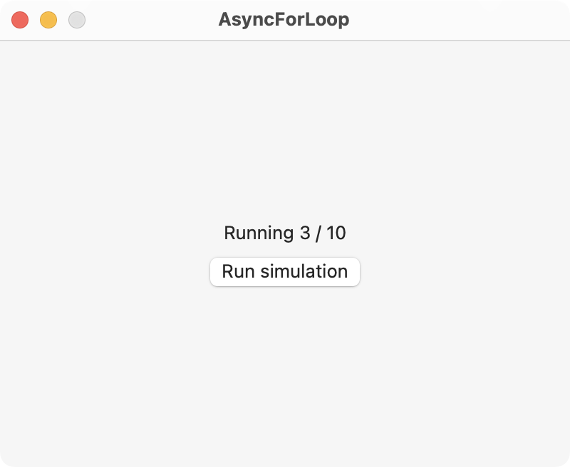

Use an asynchronous operation to update a SwiftUI Text view from a for-in loop. In this example, the step variable is updated for each iteration on the main thread. This allows the variable to update the Text view.

import SwiftUI
class Simulation: ObservableObject {
@Published var step = 0
let nsteps = 10
func run() async {
for n in 0..<nsteps {
await MainActor.run {
self.step = n
}
print("Running \(n) / \(nsteps)")
sleep(2)
}
}
}
struct ContentView: View {
@StateObject private var simulation = Simulation()
var body: some View {
VStack {
Text("Running \(simulation.step + 1) / \(simulation.nsteps)")
Button("Run simulation") {
Task {
await simulation.run()
}
}
}
.padding()
.frame(width: 400, height: 300)
}
}
Gavin Wiggins © 2024